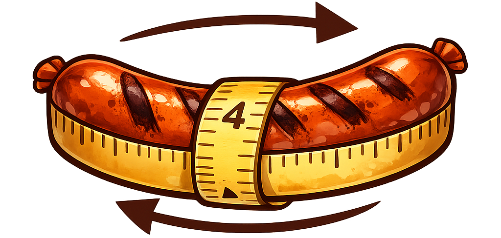
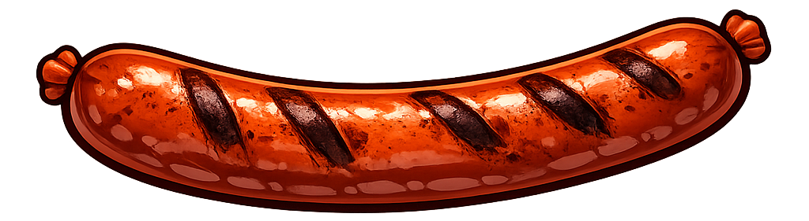

Girth
Drives the signal into a tanh waveshaper. From subtle warmth to fat, harmonic crush.
Glizzyizer is a free saturation & distortion plugin inspired by Sausage Fattener. Four knobs, no menus, all flavor. Built with JUCE.
Free · open source · MIT-style spirit.

Everything you need, nothing you don't. Twist, hear it, move on.

Drives the signal into a tanh waveshaper. From subtle warmth to fat, harmonic crush.
Tilt EQ. Roll it down for darker, smokier color — push it up for bright, biting top end.
Toggles a presence push plus a high-frequency stereo widener. Instantly bigger, instantly hotter.
Output gain in dB. Match levels after the saturation so your A/B is honest.
Glizzyizer-x.y.z-Setup.exe from the releases page.C:\Program Files\Common Files\VST3).Tested in FL Studio. Should work in any VST3 host on Windows x64.
You'll need Visual Studio 2022 with C++ workload, and Git.
git clone --recursive https://github.com/SilasStilling/Glizzyizer.git
cd Glizzyizer
cmake -S . -B build -G "Visual Studio 17 2022" -A x64
cmake --build build --config ReleaseThe VST3 ends up in build\Glizzyizer_artefacts\Release\VST3\. To build the installer, see installer/README.md.